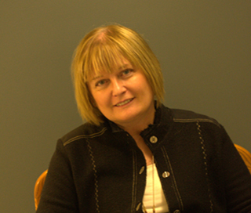
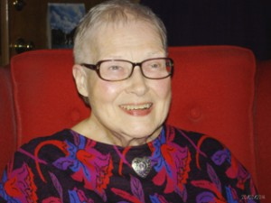
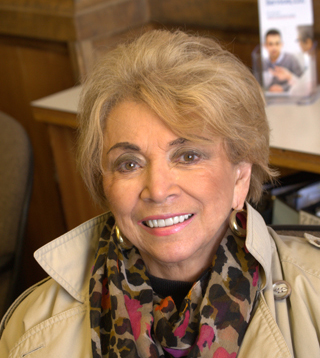
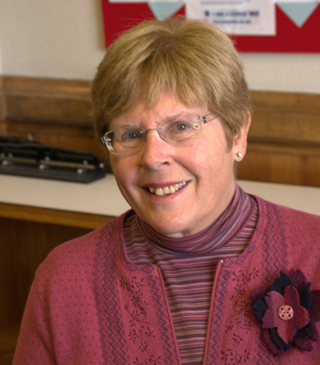

Board President
Ann McQuillan Perri joined the Board of Directors of the Children’s Dispensary in 2008. She has served as Vice President as well as Chair on several committees. Currently Ann is serving as Board President. She is also the Chair of the Operations Committee and is a member of the Investment and Program Committees.
Past affiliations include the American Association of University Women (AAUW) where Ann served as Chairman of fundraising efforts, and the YWCA of South Bend, where she also worked in fundraising.
Currently, Ann Is employed with Morgan Stanley Wealth Management as a Vice President. Some of Ann’s personal interest include gardening, travel and spending time with her grandchildren and family.
Vice President
Peggy Voorheis joined the Children’s Dispensary’s Board of Directors in 2012. However, Peggy is not unfamiliar with “A Place To Be Me”. Currently Peggy is serving as Chair of the Program Committee.
As a member of the Pilot Club of South Bend since 1993, Peggy has enjoyed a long term relationship with Children’s Dispensary. Peggy is currently the president elect for the Pilot Club and has served as fundraising chair person for many years. She has also served as fundraising coordinator for MI/IN District Pilot International.
Peggy volunteers as a ‘side walker’ for Reins of Life and as a clerk at St. Joseph County 4H Fair animal auction. Employed by 1st Source Bank since 1986, Peggy is Assistant Vice President & Consumer Compliance Officer. In 1995 Peggy received Certified Regulatory Compliance Manager (CRCM). In her leisure time Peggy enjoys gardening, boating and traveling.
Board Treasurer
Paula K. Horvath became a member of the Board of Directors of the Children’s Dispensary in 2000. As an active member of the board Paula has held the office of president and served on numerous committees. Currently, Paula serves as Treasurer and is a member of the Investment Committee.
Previous affiliations include; Tri Kappa Associates, Service Guild, and Delta Gamma Fraternity. Paula served as President with each of these organizations. Paula is also active in her church’s Women’s Circle, Bible Study Fellowship and is a member of 2 book clubs. She loves to read, travel, spend time at the lake, and time with family.
Board Secretary
Tamara Lamont Neeser has been a member of the Board of Directors of the Children’s Dispensary since 2006. Tammi currently serves as Secretary, and has served on several committees and been active in fundraising efforts.
She has been a member of the Junior League of South Bend, Inc. since 1992 and has served on their Board of Directors as Communications Vice President and chaired several committees. Tammi has also been the Vice President and Secretary of the Riley High School Wildcat Band Boosters. She is the mother of three, and is an artist specializing in watercolor portraits and drawings of homes and children.
Board Member
Dee Ann Mattes joined the Board of Directors of the Children’s Dispensary in 2008. She has served as Vice President as well as Chair on several committees. Currently Ann is serving as Board President. She is also the Chair of the Operations Committee and is a member of the Investment and Program Committees.
Currently Dee serves on the Operations Committee as well as the Investment Committee. Past affiliations include: President of the Art League, President of South Bend Women’s Association, and President of the South Bend Symphony Orchestra’s Board of Directors. She has also done fundraising work for many service organizations in our community. Dee enjoys reading and cinema.
Board Member
Sharon Kalling became a member of the Board of Directors in 2014, having returned to us after some years away. Sharon says “Forever I have been interested in providing outstanding educational and recreational opportunities for people with special needs”.
She is currently the president of the Berrien County Regional Service Agency School Board of Education. She has also served on the boards of various community organizations. Sharon continues to keep busy with volunteer work and being a grandmother.
Board Member
Marilyn Peacock served on the board from late 1999 to 2010. Returning in 2014, she is currently serving as the Program Committee Chairperson.
Marilyn was a kindergarten teacher with the South Bend Community School Corporation for 34 years. She also taught at Bethel College as an adjunct professor. Marilyn was a member of the AAUW, the NEA, the Service Guild, as well as the the local and international chapters of the Association for Childhood Education. As an active volunteer in the community, Marilyn has served as mentor for SBCSC and has volunteered at Reins of Life, Monroe Circle, and Granger Community Church book store.
Marilyn enjoys a 4- 6 mile walk as part of her daily routine.
Board Member

Julie Yates was accepted onto the board of directors in November 2015. A previous employee with the Samaritan Counseling Center in South Bend, Julie’s past affiliations include:
Currently Julie also volunteers at Memorial Hospital and in her spare time she enjoys spoiling the grandchildren, gardening and reading.